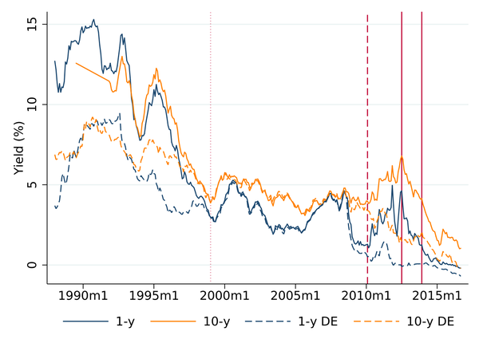

Contact:
mihalache.2@osu.edu
425 Arps Hall, The Ohio State University, Columbus, OH 43210
My name is Gabriel, I study topics in International Macroeconomics. My work explores the consequences of sovereign default risk for the maturity structure of public debt, sectoral reallocation, capital accumulation, and fiscal-monetary interactions. I am an assistant professor of economics at The Ohio State University. I received my PhD in 2016, from the University of Rochester. If you're curious, this is how you pronounce my last name.
All materials, including syllabi and recordings, are distributed via Carmen. Class-specific office hours are listed in the syllabus. For other appointments, please email. Students, please use mihalache.2@osu.edu and include the class name in the subject. Thank you!
Are you considering asking me to write a reference letter in support fo your grad school applications? Please read carefully the information available here, to help me help you. Thank you!
It is traditional for academics to decorate their office doors with snippets from articles, media, social commentary, quotes, or cartoons. These are the current content on my door, as of Jan 2025:
{kind=link}
{kind=link}